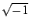

sqrt(2)*e^(i*pi/3).
Οι προσεγγιστικοί αριθμοί γράφονται στην επιστημονική μορφή :
ακέραιο μέρος ακολουθούμενο από μία τελεία διαχωρισμού και το δεκαδικό μέρος
(πιθανώς ακολουθούμενο από το e και ένα εκθέτη).
Παραδείγματος χάρη, ο 2 είναι η ακριβής μορφή του ακέραιου, ενώ
2.0 (ή απλά 2.) είναι η προσεγγιστική μορφή του ίδιου
ακεραίου.
Ανάλογα, το
1/2 είναι η ακριβής μορφή του κλάσματος, ενώ 0.5
είναι η προσεγγιστική μορφή του ίδιου κλάσματος.
Για να δούμε την προσεγγιστική μορφή ενός ακεραίου, ενός κλάσματος και μιας
παράστασης (π.χ. του 2, του 1/2, και της τετραγωνικής ρίζας του 2)
τα εισάγουμε σε μία γραμμή γραμμή εντολών ως 2 ; 1/2 ; sqrt(2)
και πατάμε "Enter" για να εμφανισθούν στην αντίστοιχη γραμμή αποτελεσμάτων.
Κατοπιν κάνουμε (αριστερό) κλικ στο μενού εξίσωσης Μ (που
βρίσκεται στο δεξί άκρο της γραμμής αποτελεσμάτων) και επιλέγουμε πρώτα
Επιλογή όλων και μετά Προσεγγιστικός υπολογισμός.
2 ; 1/2 ; sqrt(2)
Το Xcas μπορεί να διαχειριστεί ακεραίους με απεριόριστη
ακρίβεια (απεριόριστο αριθμό ψηφίων) :
πληκτρολογήσετε για παράδειγμα το 100! και μετρήστε το πλήθος
των ψηφίων της απάντησης.
Με την συνάρτηση
evalf μεταβαίνουμε από την ακριβή μορφή μίας παράστασης
στην προσεγγιστική της μορφή,
και, αντίστροφα, με την εντολή exact μετατρέπουμε μία προσεγγιστική
παράσταση στην ακριβή της μορφή.
Το τελικό αποτέλεσμα μιας σειράς υπολογισμών είναι σε ακριβή μορφή εάν όλα τα
ενδιάμεσα αποτελέσματα είναι σε ακριβή μορφή. Αντίθετα, το τελικό αποτέλεσμα μιας
σειράς υπολογισμών είναι σε προσεγγιστική μορφή, εάν ένα τουλάχιστον από τα
ενδιάμεσα αποτελέσματα είναι σε προσεγγιστική μορφή.
Δηλαδή το άθροισμα 1.5+1 είναι ένας αριθμός στην προσεγγιστική του μορφή,
ενώ το άθροισμα 3/2+1 είναι ένας αριθμός στην ακριβή του μορφή.
sqrt(2) evalf(sqrt(2)) sqrt(2)-evalf(sqrt(2)) exact(evalf(sqrt(2)))*10^9 exact(evalf(sqrt(2)*10^9))Για τους προσεγγιστικούς (πραγματικούς) αριθμούς, η ακρίβεια της παράστασής τους (δηλαδή ο αριθμός των ψηφίων στην παράστασή τους) εξαρτάται είτε από τον αριθμό των ψηφίων που έχουμε ορίσει στις Ρυθμίσεις Cas του Xcas είτε από την δεύτερη παράμετρο της εντολής
evalf.
evalf(sqrt(2),50) evalf(pi,100)Ορίζοντας τον αριθμό των ψηφίων στις Ρυθμίσεις Cas του Xcas καθορίζουμε την ακρίβεια των παραστάσεων για όλους τους επόμενους υπολογισμούς. Ο αριθμός αυτός των ψηφίων ορίζεται είτε από το μενού
Ρυθμίσεις -> Ρυθμίσεις Cas (βλέπε
και το σχετικό βίντεο στην διεύθυνση
http://inf-server.inf.uth.gr/~akritas/xcas.htm)
είτε από
την μεταβλητή Digits.
Digits:=50 evalf(pi) evalf(exp(pi*sqrt(163)))
Προσοχή: Το γράμμα i είναι προεπιλεγμένο ως  και δεν μπορεί να χρησιμοποιηθεί για κανέναν άλλο σκοπό
(ως μεταβλητή).
(1+2*i)^2 (1+2*i)/(1-2*i) e^(i*pi/3)Το Xcas ορίζει το μη προσημασμένο άπειρο ως
infinity (), το θετικό ως
+infinity ή inf (+ ) και το αρνητικό ως -infinity
ή -inf(- ).
1/0; (1/0)^2; -(1/0)^2
| Προκαθορισμένες σταθερές | |
pi |
3.14159265359 |
e |
e 2.71828182846 |
i |
i = |
infinity |
|
+infinity ή inf |
+ |
-infinity ή -inf |
- |